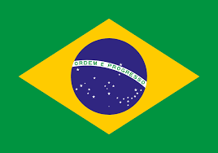
Em 1822, o país se tornou independente com Dom Pedro I, passando de império para república em 1889 e chegando à atual democracia após a Constituição de 1988.
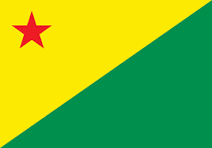
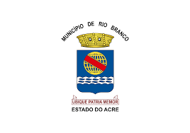
Capital (Rio Branco): Desenvolveu-se às margens do rio Acre, sendo centro político e econômico.
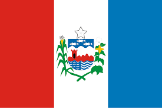
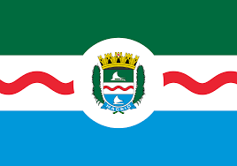
Capital (Maceió): Cresceu com o porto e comércio, tornando-se capital em 1839.
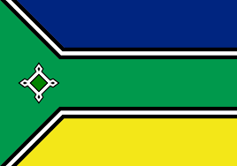
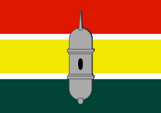
Capital (Macapá): surgiu com a Fortaleza de São José de Macapá e hoje é famosa por ficar na Linha do Equador.
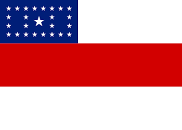
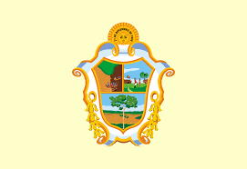
Capital (Manaus): Viveu auge econômico com o Teatro Amazonas e comércio fluvial.
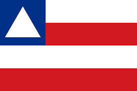
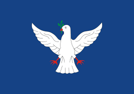
Capital (Salvador): Primeira capital do Brasil, rica em cultura e história colonial.
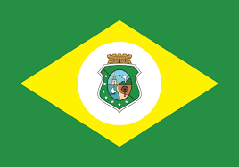
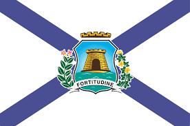
Capital (Fortaleza): Cresceu como porto e centro turístico do Nordeste.
Capital (Brasília): Planejada por Lúcio Costa e Oscar Niemeyer, símbolo da modernidade.
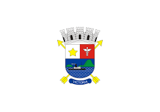
Capital (Vitória): Ilha estratégica, cresceu com o comércio portuário.
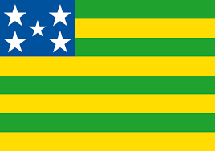
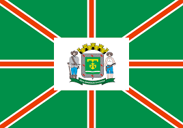
Capital (Goiânia): Planejada na década de 1930 para substituir a antiga capital.
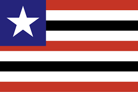
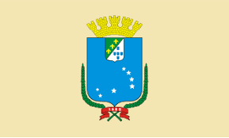
Capital (São Luís): Única cidade brasileira fundada por franceses, rica em azulejos.
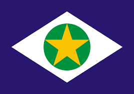
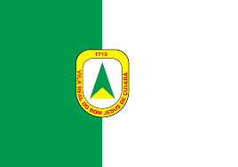
Capital (Cuiabá): Fundada no ciclo do ouro, mantém tradições históricas.
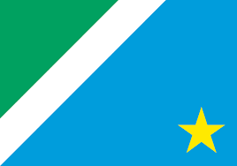
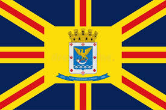
Capital (Campo Grande): Desenvolveu-se com agropecuária e comércio.
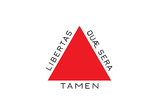
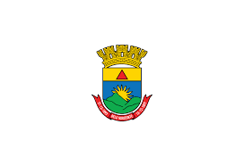
Capital (Belo Horizonte): Primeira cidade planejada do Brasil, inaugurada em 1897.
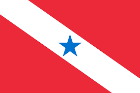
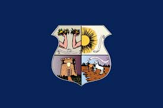
Capital (Belém): Cresceu com o ciclo da borracha e comércio fluvial.
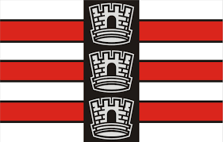
Capital (João Pessoa): Uma das cidades mais antigas do Brasil.
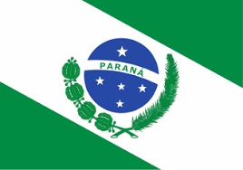
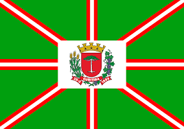
Capital (Curitiba): Destaque em urbanismo e qualidade de vida.
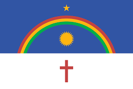
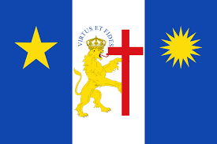
Capital (Recife): Forte influência holandesa e centro cultural.
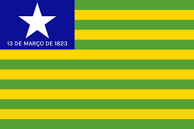
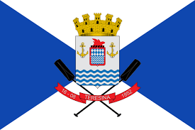
Capital (Teresina): Primeira capital planejada do Nordeste.
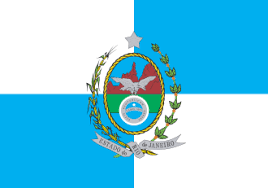
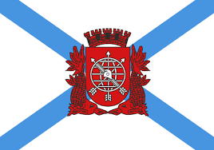
Capital (Rio de Janeiro): Foi capital do país até 1960, famosa mundialmente.
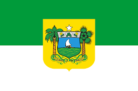
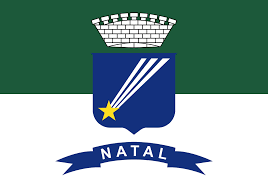
Capital (Natal): Cresceu com base militar e turismo.
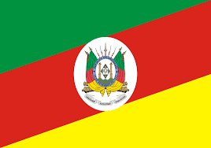
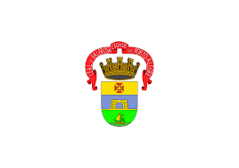
Capital (Porto Alegre): Centro político e cultural do sul.
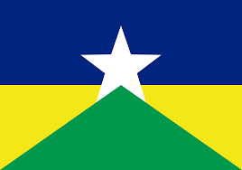
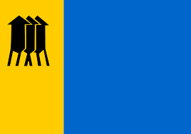
Capital (Porto Velho): Cresceu com atividades ferroviárias e extrativismo.
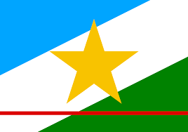
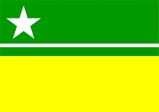
Capital (Boa Vista): Planejada em formato radial.
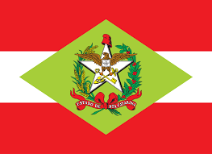

Capital (Florianópolis): Ilha com forte turismo e qualidade de vida.
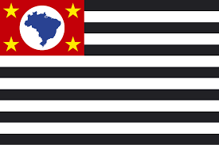
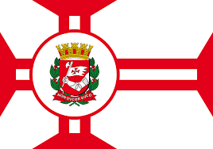
Capital (São Paulo): Maior cidade do continente, centro financeiro do Brasil.
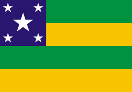
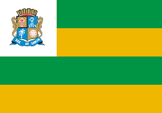
Capital (Aracaju): Planejada para ser capital no século XIX.
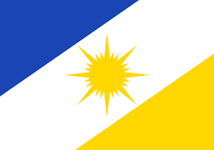
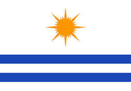
Capital (Palmas): Uma das capitais mais novas do Brasil.